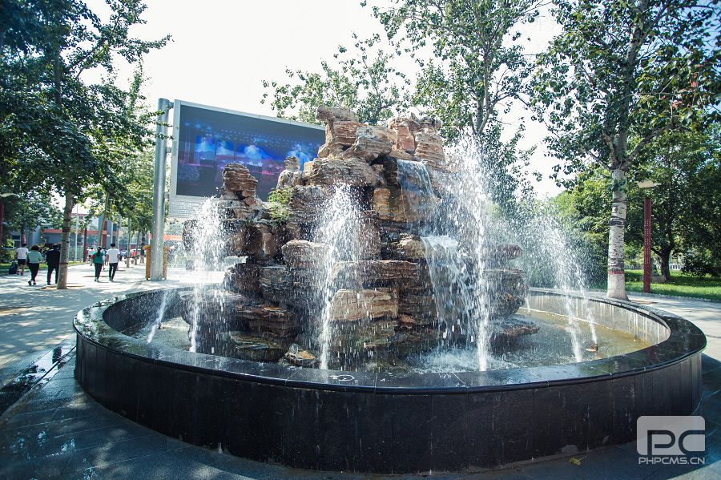

学校简介

泊头职业学院是公办全日制普通高校，实施专科层次教育。
其前身为1925年9月建校的直隶省立第九师范学校，新中国成立后，校名几经更改，终名为“河北泊头师范学校”。
2000年7月，更名为沧州师范专科学校泊头分校，招收全日制专科生，举办大学专科教育。
2009年4月，经教育部备案批准，升格改建为泊头职业学院。
建校九十一年来，培养了大批优秀人才，
其中不乏国家高级领导干部、将军、科学家、文学家以及数以万计的优秀人民教师，
为民族解放、新中国诞生以及社会主义建设事业做出了令人瞩目的贡献，被誉为“津南革命的策源地”、“沧州黄埔”。
校园文化
校园环境


位置信息
校企合作
秦皇岛市海港区盛邦职业培训学校成立于2004年4月，是盛邦升华职业教育在秦皇岛的授权培训中心。
秦皇岛盛邦升华职业教育目前已成为秦皇岛乃至华北地区办学历史较长、办学规模较大、办学条件较好，
办学水平较高的专业IT人才职业教育培训机构。在业内具有广泛的影响、良好的口碑和社会美誉度。
学校秉承对学生负责、对家长负责、对企业负责、对社会负责的办学理念；以市场需求为导向，
以促进就业为目标，致力于培养专业化、技能化，职业化，同时具备良好职业素质和职场适应性的优秀人才。
在线报名